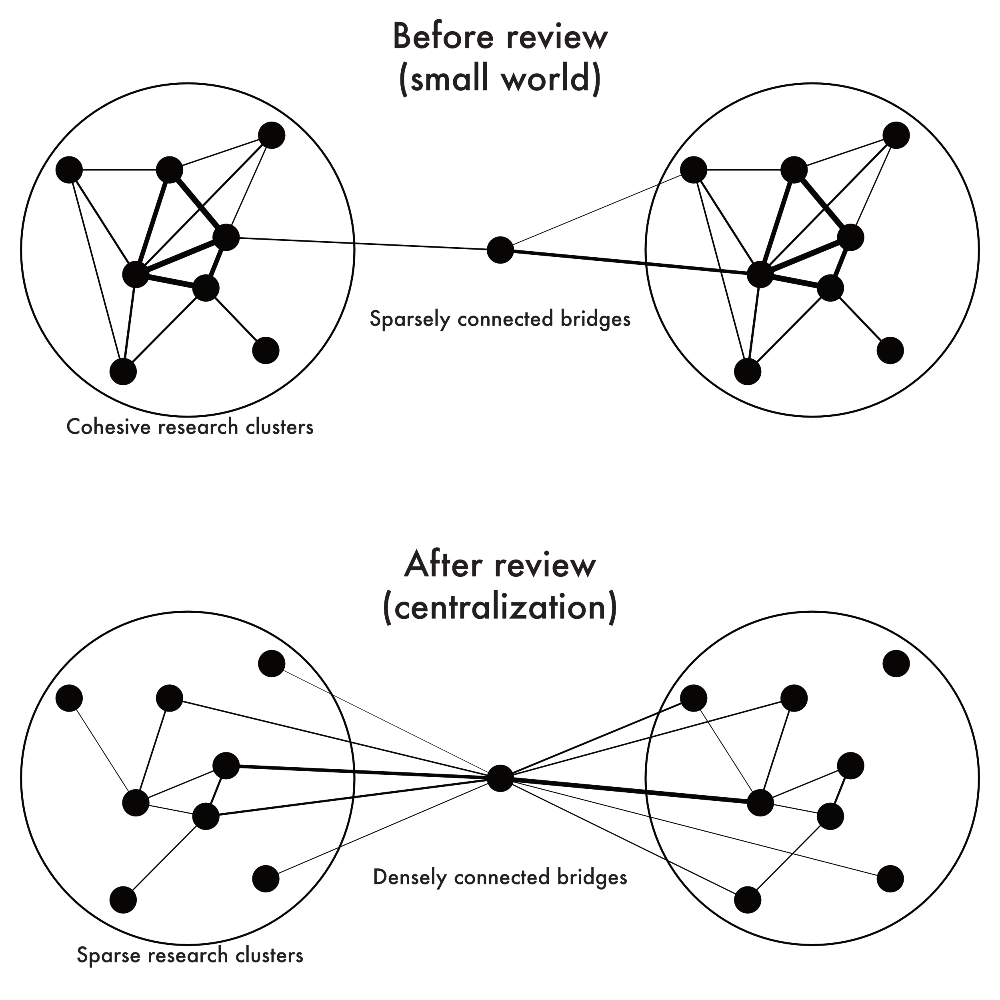

Creative destruction:
The structural consequences of scientific curation
Communication of scientific findings is fundamental to scholarly discourse. We show that academic review articles, a quintessential form of interpretive scholarly output, perform curatorial work that substantially transforms the research communities they aim to summarize. Using a corpus of millions of journal articles, we analyze the consequences of review articles for the publications they cite, focusing on citation and co-citation as indicators of scholarly attention. Our analysis shows that, on the one hand, papers cited by formal review articles generally experience a dramatic loss in future citations. Typically, the review gets cited going forward instead of the specific articles mentioned in the review. On the other hand, reviews curate, synthesize, and simplify the literature concerning a research topic. Most reviews identify distinct clusters of work and highlight exemplary bridges that integrate the topic as a whole. These bridging works, in addition to the review, become a shorthand characterization of the topic going forward and receive disproportionate attention. In this manner, formal reviews perform creative destruction so as to render increasingly expansive and redundant bodies of knowledge distinct and comprehensible.
Detailed analysis available in Creative destruction: The structural consequences of scientific curation, published in the American Sociological Review (https://doi.org/10.1177/0003122421996323).
Reviews poach attention.
Articles that are cited in a review experience, on average, a significant reduction in the number of citations they will receive in the future. While the direction and magnitude of the effect of citation varies significantly among cited articles, the median article will receive 38.3% fewer citations for each review in which they are included.
Bridging research is boosted.
While citation by reviews results in a reduction in attention on average, the effect is heterogeneous. A small subset of cited articles, in particular those that bridge otherwise disconnected research clusters, will experience an increase in attention after they are included in a review. The articles that receive the largest boost to citations are those that draw connections between research clusters that were previously seen as residing in distinct scientific domains.
Emerging fields are restructured.
 The curatorial power of review articles results in a characteristic restructuring of reviewed scientific subfields. Emerging subfields tend to exhibit a “small world” network cocitation structure, characterized by several highly active but largely unconnected clusters of research. After such subfields become the subject of formal review they become much more centralized around a few exemplary hubs, which act as reference points for future research on the topic. This restructuring creates a concise representation of an area of scientific knowledge, but does so at the expense of the more detailed research domain it replaces.
Scientific exemplars.
The culling and restructuring performed by reviews is a key mechanism in the growth of scientific knowledge. By identifying certain bridging research as representative of a subfield, reviews make those subfields comprehesible to the wider scientific community. The ‘churn’ of scientific knowledge is thus a process of encapsulation of new domains through the identification of exemplars among published existing research.
McMahan, Peter, and Daniel A. McFarland. “Creative Destruction: The Structural Consequences of Scientific Curation.” American Sociological Review, 2021.
@article{mcmahanCreativeDestruction2021,
title = {Creative Destruction: The Structural Consequences of Scientific Curation},
author = {McMahan, Peter and McFarland, Daniel A.},
year = {2021},
journaltitle = {American Sociological Review},
doi = {10.1177/0003122421996323},
}